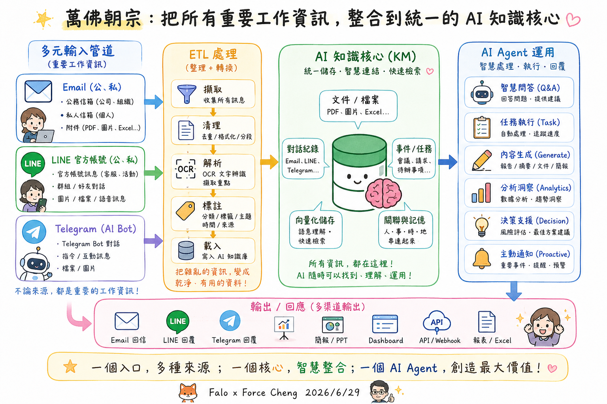
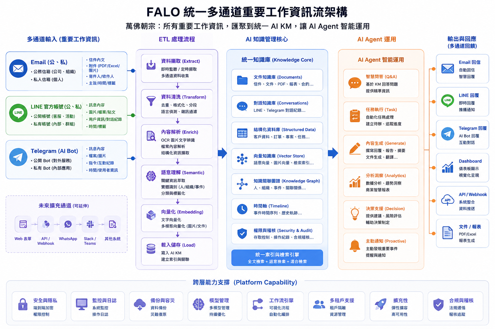
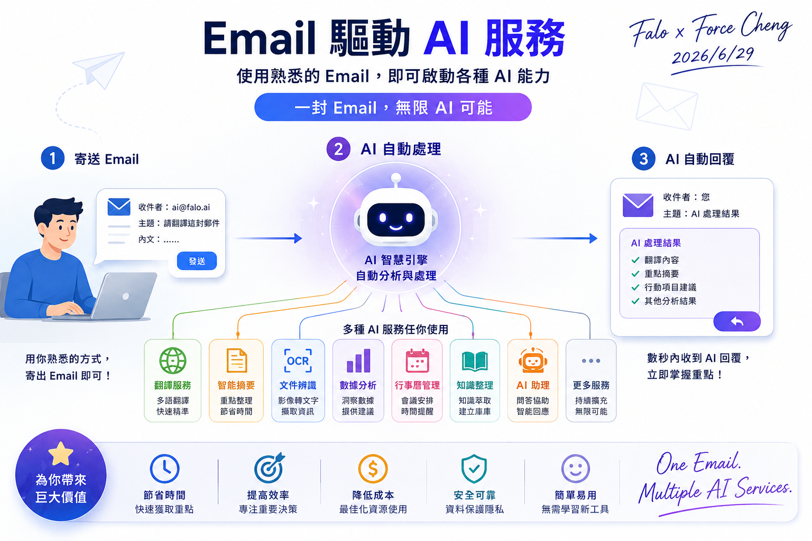
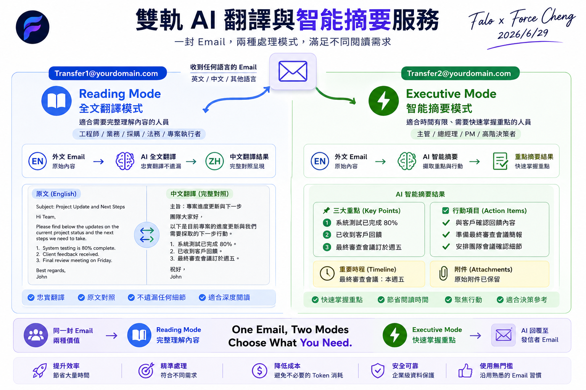
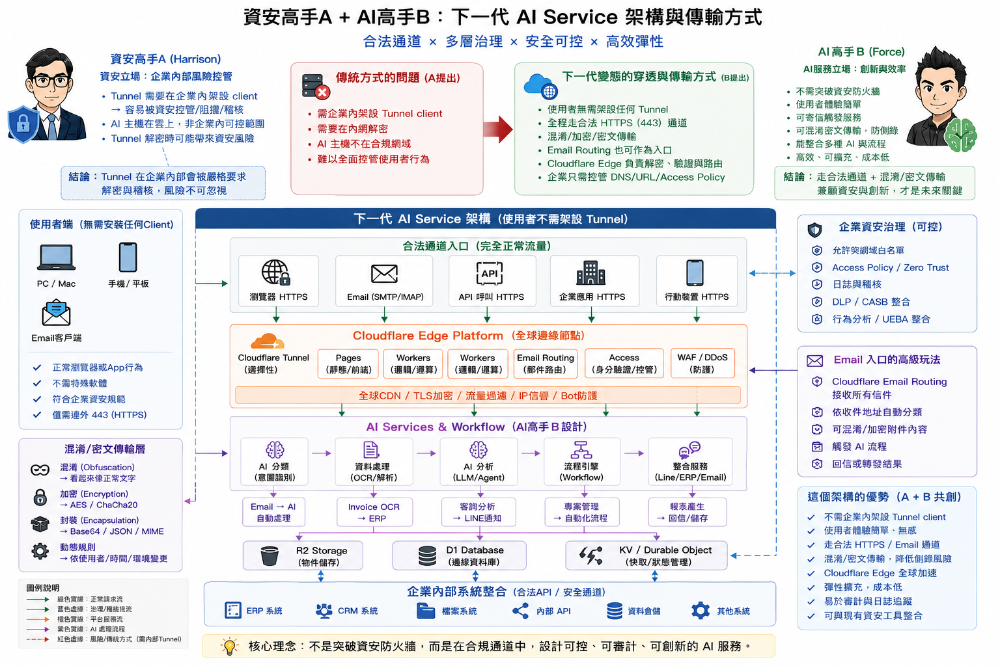
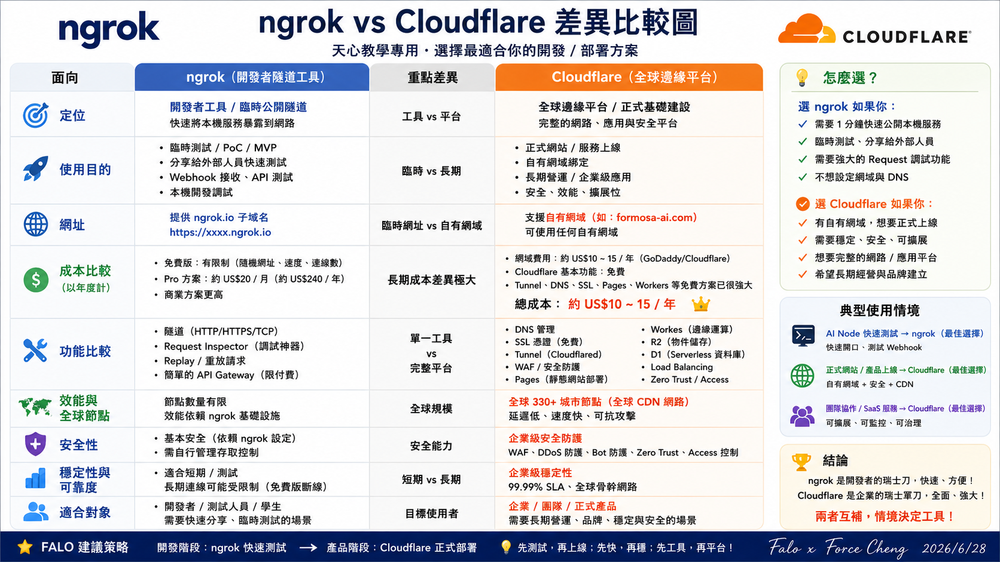
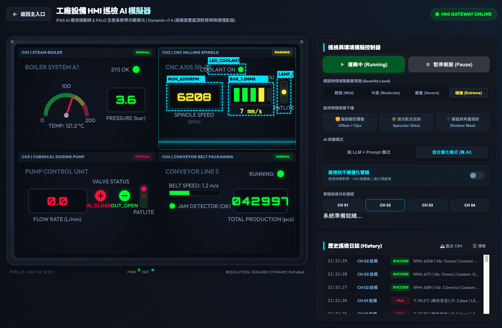

💼 7. 商業型整合專案
本區塊收錄具備高度商業應用價值與軟體工程規格的 AI 整合專案。相較於前述針對特定場景的基礎 ETL 實作案例，商業型整合專案更著重於解決企業實際落地時的複雜架構痛點（如多模型性能對比、地端與雲端網絡安全穿透、Serverless 雲端邊緣計算部署等），協助同仁以架構師的視角規劃具備長期維運與商業彈性的解決方案。
商業型整合專案 A：FALO NotebookLM Runtime Lab ─ 企業級知識庫整合運行網關
- 專案精神：針對企業內部部署知識管理（KM）與自動化同步設計的網關（Gateway）。本案例由於涉及地端文件同步與自動化指令碼，線上展示僅提供「高階架構示意圖與原型卡片」，完整功能需結合本機開發環境與 ngrok 安全隧道技術 穿透進行實時操作與展示。
- 技術對比與特點：
- 雙版本門戶網關：提供雙版本門戶入口，支援自動化文件同步腳本，免去手動上傳 NotebookLM 來源庫的限制；透過 ngrok 將地端自動化服務安全映射至公網。
- 地端與 ngrok 隧道穿透：利用地端指令列工具（CLI）與 ngrok 隧道，實現「非同步文件監聽 ➔ 自動同步上傳 ➔ 團隊共用導覽」之地端與雲端橋接技術驗證。
- 研究報告入口：
- 🌐 開啟 FALO NotebookLM Runtime Lab 門戶入口 (僅提供示意圖) *(將於新分頁中開啟)*
商業型整合專案 B：LINE 資訊過載助手 ─ 深度研究彙總報告
- 專案精神：解決 LINE 群組對話資訊過載痛點，透過極致 Prompt 工程與多模型並行測試，將碎片化對話自動提煉為高品質的結構化彙總與待辦清單。
- 技術對比與特點：
- 六大模型實測：基於同一套基準 Prompt，深度對比 Google DeepThink（慢思考推理）、Google DeepResearch（長篇研究）、Claude（繁體中文美感）、Grok（即時社交熱點）、Kimi（超長文本細節）與 Perplexity（智慧搜尋背景）在對話摘要上的效能表現。
- ETL 資料管線：探討非結構化聊天紀錄（TXT/CSV）的降噪、清洗、分段切片與級聯彙總設計，並提供多模型性能與 Token 成本評估，協助架構師規劃最優落地路徑。
- 研究報告入口：
- 🌐 開啟 LINE 資訊過載助手 ─ 深度研究彙總報告 *(將於新分頁中開啟)*
商業型整合專案 C：FALO Web Share API ─ 雲端 Workers 拍照快易部署與 QRCode 門戶
- 專案精神：針對 AI 與雲端新手設計的超輕量 Web Share API 應用服務。本案例運用 Cloudflare Workers 進行 Serverless 邊緣計算部署，免去繁瑣的地端伺服器環境設定。協助 AI 新手小白簡單地使用 AI 服務，使用者只需透過手機拍照，即可將照片或檔案一鍵快速部署至雲端，並實時生成專屬的下載分享 QRCode，打通「實體捕捉 ➔ 邊緣負載 ➔ 雲端共享」的極簡化工作流。
- 技術對比與特點：
- Cloudflare Workers 邊緣部署：利用 Cloudflare Workers 的極速分佈式邊緣網絡架構，實現微毫秒級的請求響應與零維護伺服器成本。
- 拍立即存與 QRCode 閘道：串接 Web Share API 與雲端暫存機制，實時生成高精度的 QRCode，方便同仁在不同裝置（如手機、平板與電腦）間無縫流通圖片與資料資產。
- 研究報告入口：
- 🌐 開啟 FALO Web Share API 雲端 Workers 部署平台 *(將於新分頁中開啟)*
商業型整合專案 D：FALO 萬佛朝宗 ─ 企業級多通道重要工作資訊流與 AI Agent 知識核心架構
- 專案精神：為解決企業內部多種溝通管道（Email、LINE、Telegram）資訊碎片化與難以沉澱的問題，本架構提出「萬佛朝宗」的終極解決方案。透過標準化的 ETL 資料管線將多元輸入進行擷取、清洗與 OCR 解析，匯聚至統一的 AI 知識庫（KM Core）進行向量化與關聯記憶。以此核心支撐各類 AI Agent（智慧問答、任務執行、內容生成、決策支援等），最後透過多通道（如自動信件、LINE 回覆、戰情看板、API/Webhook 等）進行反饋，建立企業智慧運作的完整資訊閉環。
- 技術對比與特點：
- 多元輸入與輸出管道整合：整合 Email、LINE 官方帳號、Telegram 機器人等工作管道，並具備高度可延伸性（支援 Web 表單、WhatsApp、Slack、Teams），同時將產出反饋回多元終端。
- 標準化 ETL 處理與知識核心：採用標準的六大處理階段（擷取、清洗、解析、語意理解、向量化、載入），將無序的原始工作資訊轉化為統一知識庫（包含文件、對話、結構化數據、向量、知識圖譜、時間軸、安全權限控制等），支撐智慧問答與決策代理。
- 跨層能力與合規支撐：具備端到端加密、監控日誌、多模型管理、工作流自動化、合規稽核等平台級支撐能力，提供企業安全防護生命線。
- 系統架構圖：


商業型整合專案 E：FALO Email 驅動雙軌 AI 翻譯與智能摘要服務
- 專案精神：為降低同仁學習新 AI 工具的門檻，本案例採用企業最熟悉的「Email」作為交互媒介。使用者只需寄送一封郵件，即可自動驅動後台 AI 智慧引擎（進行翻譯、摘要、文件辨識、數據分析或行事曆管理等處理），並在數秒內收到 AI 的結構化回覆。特別針對外文信件設計「雙軌處理模式」，透過寄送至不同收件地址，自動分流為「Reading Mode 全文翻譯（忠實對照、適合工程/法務/執行者）」或「Executive Mode 智能摘要（提煉三大重點與行動項目、適合主管/決策者）」，實現「一封信件、兩種模式、無限可能」之無門檻 AI 落地應用。
- 技術對比與特點：
- Email 2.0 AI Event Gateway 技術架構：引進 Cloudflare Email Routing 免費路由別名，免去購買額外企業信箱的成本。透過 Edge Workers 作為前端處理，將不同的 Email 地址映射為專屬的「AI Function」接口（例如
ocr@company.com、meeting@company.com、audit@company.com、invoice@company.com等），讓寄信自動觸發後台 AI 自動化工作流（Workflow），將 AI 默默運作於無形。 - 零門檻 Email 驅動介面：使用者無需登入任何新系統或學習 Prompt，沿用熟悉的郵件習慣即可啟動後台複雜的 AI 數據管線（含清洗、分類、摘要與回信）。
- 雙軌自動分流與客製化處理：系統根據收件地址（如
Transfer1與Transfer2）自動路由： - Reading Mode (全文翻譯模式)：自動提取外文信件原文，進行精準的段落比對翻譯，輸出雙語對照之結構化信件。
- Executive Mode (智能摘要模式)：自動提取核心要點（Key Points）、待辦行動項目（Action Items）、重要時程（Timeline）及原信附件，為決策者快速降噪提煉。
- 安全與經濟性兼顧：信件內容自動去敏感化並進行 Token 快取節費，確保企業機密與成本效益。
- 服務架構與運行模式圖：



- 研究報告入口：
- 🌐 開啟 FALO Email 雙軌 AI 翻譯與智能摘要服務門戶 *(將於新分頁中開啟)*
商業型整合專案 F：資安與 AI 雙贏的下一代企業級架構 ─ Cloudflare 邊緣平台與合規通道設計
- 專案精神：企業在導入 AI 服務時，常面臨「AI 的創新效率（希望快速測試、無障礙調用）」與「資安的風規控管（拒絕隨意架設 Tunnel、要求內網解密與全面審計）」之間的拉鋸衝突。本專案由「資安高手 Harrison」與「AI 高手 Force」共同研討，提出「合規通道，可控創新」的雙贏架構。全面採用國際頂尖大廠（Google 生態系與 Cloudflare）的企業級雲端基礎設施：前端以 Google Apps Script (GAS) 或 Cloudflare Edge 作為安全門戶，中間處理層搭載 Google Cloud Run 執行高效彈性的 Python AI 微服務，後端則完美整合 Google Workspace 的安全資料協作中心（Drive、Sheets、Docs、Gmail 與 NotebookLM），實現資料安全隔離、權限分明且留存在客戶自有安全空間的設計。此架構不僅能免去內網穿透風險，更無縫對接 Zero Trust 企業資安治理標準，為大廠級別的落地標竿。
- 技術對比與特點：
- 國際大廠級別零信任治理：採用 Google Cloud 與 Cloudflare 兩大國際雲端巨頭的防護架構，前端免去安裝任何 Tunnel Client，全線經由合法的 HTTPS (443) 加密通道傳輸。結合 Cloudflare Access 權限管控與 Google 生態系的檔案權限隔離，兼顧 DLP/CASB 資安審計。
- Cloudflare Edge 與 Google Cloud 協同運算：前端靜態門戶與路由利用 Cloudflare Workers 的極速分佈式邊緣網絡；AI 核心運算（ETL、OCR、Agent 微服務）則在 Google Cloud Run 容器中執行，達到毫秒級回應與國際級 SLA 穩定度。
- 開發與正式部署之雙軌思維：
- 開發測試期 (ngrok)：供開發者快速生成公開隧道進行 PoC/MVP 概念驗證。
- 企業正式上線期 (Cloudflare + Google)：綁定自有網域、全球 CDN 加速、WAF/DDoS 安全防護，提供 99.99% 的生產級可用度。
- 技術架構與部署差異圖：



商業型整合專案 G：FALO 工廠設備 HMI 巡檢 AI 模擬器 ─ 2x2 四分割工業 HMI 智慧監控與邊緣 OCR 解析系統
- 專案精神：本專案為針對工業物聯網（IIoT）與智慧巡檢量身打造的互動式模擬系統。展示了 2x2 四分割工業 HMI（Boiler 鍋爐系統、CNC 主軸、Dosing Pump 化學加藥泵、Conveyor 輸送帶）畫面之實時數據波動與動態 AI 影像辨識、邊緣 OCR 欄位提取。特別設計「物理干擾與抗噪演算法模組」，支援極端環境下的鏡頭劇烈震動、眩光反射與斜角陰影干擾，讓使用者能直觀對比「純 LLM 模式」與「二值化預處理 + 混合優化模式」的辨識精度差異，並提供歷史對帳日誌回溯定位與 CSV 一鍵匯出，為工業視覺巡檢提供極具實用價值的原型範例。
- 技術對比與特點：
- 2x2 四分割動態 HMI 監控：即時模擬蒸汽溫度、壓力、流速及總產量等關鍵參數波動，內置警報器狀態變更。
- 抗干擾機器視覺與邊緣 OCR：包含物理干擾器（鏡頭抖動偏移、Specular Glare 眩光、Shadow Mask 陰影），並搭載二值化預處理與 HSV 閥值預處理，大幅提升極端工業環境下 OCR 字元辨識之穩定性。
- 系統運維與對帳日誌：記錄巡檢狀態（SUCCESS / FAIL）及詳細數據日誌，支援一鍵 CSV 數據日誌導出，作為數據溯源與 AI Auditing（審計）的核心基礎。
- 研究報告與展示入口：
- 🌐 開啟 FALO 工廠設備 HMI 巡檢 AI 模擬器 *(將於新分頁中開啟)*
- 運行系統與巡檢介面圖：
